용접산업기사 (2014-08-17 기출문제)
1과목: 용접야금 및 용접설비제도
1. 다음 보기를 공통적으로 설명하고 있는 표면경화법은?
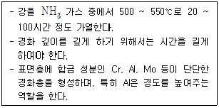
- 질화법
- 침탄법
- 크로마이징
- 화염경화법
(정답률: 74%)

2. 강을 단조, 압연 등의 소성가공이나 주조로 거칠어진 결정조직을 미세화하고 기계적성질, 물리적성질 등을 개량하여 조직을 표준화하고 공랭하는 열처리는?
- 풀림(annealing)
- 불림(normalizing)
- 담금질(quenching)
- 뜨임(tempering)
(정답률: 49%)
3. Fe-C 평형상태도에서 조직과 결정 구조에 대한 설명으로 옳은 것은?(오류 신고가 접수된 문제입니다. 반드시 정답과 해설을 확인하시기 바랍니다.)
- 펄라이트는 γ+Fe3C 이다.
- 레데뷰라이트는 α+Fe3C 이다.
- α-페라이트는 면심입방격자이다.
- δ-페라이트는 체심입방격자이다.
(정답률: 49%)
4. 티타늄(Ti)의 성질을 설명한 것 중 옳은 것은?
- 비중은 약 8.9 정도이다.
- 열 및 도전율이 매우 높다.
- 활성이 작아 고온에서 산화되지 않는다.
- 상온부근의 물 또는 공기 중에서는 부동태 피막이 형성된다.
(정답률: 54%)
5. 다음은 금속의 공통적인 성질로 틀린 것은?
- 수은 이외에은 상온에서 고체이며 결정체이다.
- 전기에 부도체이며, 비중이 작다.
- 결정의 내부구조를 변경시킬 수 있다.
- 금속 고유의 광택을 갖고 있다.
(정답률: 83%)
6. 다음 중 강괴의 결함이 아닌 것은?
- 수축공
- 백점
- 편석
- 용강
(정답률: 56%)
7. 일반적으로 용융 금속 중에 기포가 응고시 빠져 나가지 못하고 잔류하여 용저부에 기계적 성질을 저하시키는 것은?
- 편석
- 은점
- 기공
- 노치
(정답률: 86%)
8. 주철 용접부 바닥면에 스터드 볼트 대신 둥근 홈을 파고 이 부분에 걸쳐 힘을 받도록 용접하는 방법은?
- 버터리법
- 로킹법
- 비녀장법
- 스터드법
(정답률: 57%)
9. 강을 경화시키기 위한 열처리는?
- 담금질
- 뜨임
- 불림
- 풀림
(정답률: 71%)
10. 탄소강의 조직 중 전연성이 크고 연하며 강자성체인 조직은?
- 페라이트
- 펄라이트
- 시멘타이트
- 레데뷰라이트
(정답률: 52%)
11. 척도의 종류 중 축척(contraction scale)으로 그릴 때의 내용을 바르게 설명한 것은?
- 도면의 치수는 실물의 축적된 치수를 기입한다.
- 표제란의 척도란에 “NS”라고 기입한다.
- 표제란의 척도란에 2 : 1, 20 : 1 등으로 기입한다.
- 도면의 치수는 실물의 실제치수를 기입한다.
(정답률: 56%)
12. 다음 용접기호 설명 중 틀린 것은?
- 는 V형 맞대기 용접을 의미한다.
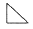
는 필릿 용접을 의미한다.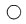
는 점 용접을 의미한다.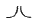
는 플러그 용접을 의미한다.
(정답률: 87%)
13. 다음 치수 보조기호 중 잘못 설명된 것은?
- t : 판의 두께
- (20) : 이론적으로 정확한 치수
- C : 45° 의 모떼기
- SR : 구의 반지름
(정답률: 88%)
14. 화살표 쪽 필릿 용접의 기호는 무엇인가?
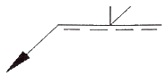
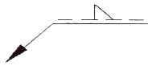
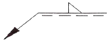
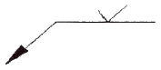
(정답률: 72%)
15. 단면도의 표시방법으로서 알맞지 않은 것은?
- 단면도의 도형은 절단면을 사용하여 대상물을 절단하였다고 가정하고 절단면의 앞부분을 제거하고 그린다.
- 온단면도에서 절단면을 정하여 그릴 때 절단선은 기입하지 않는다.
- 외형도에 있어서 필요로 하는 요소의 일부만을 부분단면도로 표시할 수 있으며 이 경우 파단선에 의해서 그 경계를 나타낸다.
- 절단했기 때문에 축, 핀, 볼트의 경우는 원칙적으로 긴쪽 방향으로 절단한다.
(정답률: 49%)
16. 핸들이나 바퀴의 암 및 리브 훅, 축 구조물의 부재 등에 절단면을 90° 회전하여 그린 단면도는?
- 회전 단면도
- 부분 단면도
- 한쪽 단면도
- 온 단면도
(정답률: 89%)
17. 한국산업규격 용접 기호 중 Z n × L(e)에서 n 이 의미하는 것은?
- 용접부 수
- 피치
- 용접 길이
- 목 길이
(정답률: 84%)
18. 면이 평면으로 가공되어 있고, 복잡한 윤곽을 갖는 부품인 경우에 그 면에 광명단 등을 발라 스케치 용지에 찍어 그 면의 실형을 얻는 스케치 방법은?
- 프리핸드법
- 프린트법
- 모양뜨기법
- 사진촬영법
(정답률: 87%)
19. 물체의 구멍이나 홈 등 한 부분만의 모양르 표시하는 것으로 충분한 경우에 그 필요 부분만을 중심선, 치수보조선 등으로 연결하여 나타내는 투상도의 명칭은?
- 부분투상도
- 보조투상도
- 국부투상도
- 회전투상도
(정답률: 41%)
20. kS의 부문별 분류 기호가 바르게 짝지어진 것은?
- KS A : 기계
- KS B : 기본
- KS C :전기
- KS D : 광산
(정답률: 84%)
2과목: 용접구조설계
21. 용접부의 단면을 나타낸 것이다. 열 영향부를 나타내는 것은?
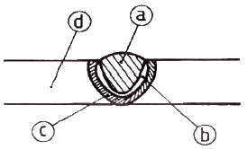
- ⓐ
- ⓑ
- ⓒ
- ⓓ
(정답률: 77%)
22. 무부하 전압이 80V, 아크전압 35V, 아크전류 400A라 하면 교류용접기의 역률과 효율은 각각 약 몇 % 인가? (단, 내부손실은 4kW 이다.)
- 역률 : 51, 효율 : 72
- 역률 : 56, 효율 : 78
- 역률 : 61, 효율 : 82
- 역률 : 66, 효율 : 88
(정답률: 57%)
23. 탐촉자를 이용하여 결함의 위치 및 크기를 검사하는 비파괴시험법은?
- 방사선투과시험
- 초음파탐상시험
- 침투탐상시험
- 자분탐상시험
(정답률: 62%)
24. 용접구조물에서 파괴 및 손상의 원인으로 가장 관계가 없는 것은?
- 시공 불량
- 재료 불량
- 설계 불량
- 현도관리 불량
(정답률: 84%)
25. 내균열성이 가장 우수하고 제품의 인장강도가 요구될 때 사용되는 용접봉은?
- 저수소계
- 라임 티탄계
- 고셀룰로스계
- 일미나이트계
(정답률: 89%)
26. 용접에 의한 용착금속의 기계적 성질에 대한 사항으로 옳은 것은?
- 용접시 발생하는 급열, 급냉 효과에 의하여 용착금속이 경화한다.
- 용착금속의 기계적 성질은 일반적으로 다층용접보다 단층용접 쪽이 더 양호하다.
- 피복아크 용접에 의한 용착금속의 강도는 보통 모재보다 저하된다.
- 예열과 후열처리로 냉각속도를 감소시키면 인성과 연성이 감소된다.
(정답률: 35%)
27. 판 두께가 30mm인 강판을 용접하였을 때 각 변형(가로 굽힘 변형)이 가장 많이 발생하는 홈의 형상은?
- H형
- U형
- K형
- V형
(정답률: 68%)
28. 용접시 발생하는 균열로 맞대기 및 필릿 용접 등의 표면비드와 모재와의 경계부에서 발생되는 것은?
- 크레이터 균열
- 비드 밑 균열
- 설퍼 균열
- 토우 균열
(정답률: 53%)
29. 직접적인 용접용 공구가 아닌 것은?
- 치핑해머
- 앞치마
- 와이어브러쉬
- 용접집게
(정답률: 85%)
30. 용착부의 인장으력이 5kgf/mm2, 용접선 유효길이가 80mm 이며, V형 맞대기로 완전 용입인 경우 하중 8000kkgf에 대한 판 두께는 몇 mm 인가? (단, 하중은 용접선과 직각 방향이다.)
- 10
- 20
- 30
- 40
(정답률: 75%)
31. 용접 구조물 조립순서 결정시 고려사항이 아닌 것은?
- 가능한 구속하여 용접을 한다.
- 가접용 정반이나 지그를 적절히 채택한다.
- 구조물의 형상을 고정하고 지지할 수 있어야 한다.
- 변형이 발생 되었을 때 쉽게 제거할 수 있어야 한다.
(정답률: 75%)
32. 용접 이음 설계상 주의사항으로 옳지 않은 것은?
- 용접 순서를 고려해야 한다.
- 용접선이 가능한 집중되도록 한다.
- 용접부에 되도록 잔류응력이 발생하지 않도록 한다.
- 두께가 다른 분재를 용접할 경우 단면의 급격한 변화를 피하도록 한다.
(정답률: 88%)
33. 용접 균열에 관한 설명으로 틀린 것은?
- 저탄소강에 비해 고탄소강에서 잘 발생한다.
- 저수소계 용접봉을 사용하면 감소된다.
- 소재의 인장강도가 클수록 발생하기 쉽다.
- 판 두께가 얇아질수록 증가한다.
(정답률: 57%)
34. 다음 ( )에 들어갈 적합한 말은?
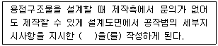
- 공작도면
- 사양서
- 재료적산
- 구조계획
(정답률: 72%)
35. 용접이음의 부식 중 용접 잔류응력 등 인장응력이 걸리거나, 특정의 부식 환경으로 될 때 발생하는 부식은?
- 입계부식
- 틈새부식
- 접촉부식
- 응력부식
(정답률: 87%)
36. 용접변형 방지법의 종류로 거리가 가장 먼 것은?
- 전진법
- 억제법
- 역변형법
- 피닝법
(정답률: 69%)
37. 용접균열의 발생 원인이 아닌 것은?
- 수소에 의한 균열
- 탈산에 의한 균열
- 변태에 의한 균열
- 노치에 의한 균열
(정답률: 64%)
38. 비파괴 검사법 중 표면결함 검출에 사용되지 않는 것은?
- MT
- UT
- PT
- ET
(정답률: 59%)
39. 모재의 인장강도 400MPa 이고, 용접시험편의 인장강도가 280MPa 이라면 용접부의 이음효율은 몇 % 인가?
- 50
- 60
- 70
- 80
(정답률: 74%)
40. 용접 이음의 기본 형식이 아닌 것은?
- 맞대기 이음
- 모서리 이음
- 겹치기 이음
- 플레어 이음
(정답률: 89%)
3과목: 용접일반 및 안전관리
41. 서브머지드 아크 용접법의 설명 중 잘못된 것은?
- 용융속도와 용착속도가 빠르며, 용입이 깊다.
- 비소모식이므로 비드의 외관이 거칠다.
- 모재 두께가 두꺼운 용접에서 효율적이다.
- 용접선이 수직인 경우 적용이 곤란하다.
(정답률: 75%)
42. MIG 용접의 특징에 대한 설명으로 틀린 것은?
- 반자동 또는 전자동 용접기로 용접속도가 빠르다.
- 정전압 특성 직류용접기가 사용된다.
- 상승특성의 직류용접기가 사용된다.
- 아크 자기 제어 특성이 없다.
(정답률: 77%)
43. 아크(arc) 용접의 불꽃온도는 약 몇 (℃) 인가?
- 1000℃
- 2000℃
- 4000℃
- 5000℃
(정답률: 63%)
44. 모재의 유황(S) 함량이 많을 때 생기는 용접부 결함은?
- 용입 불량
- 언더컷
- 슬래그 섞임
- 균열
(정답률: 74%)
45. 가스용접에 쓰이는 토치의 취급상 주의사항으로 틀린 것은?
- 팁을 모래나 먼지 위에 놓지 말 것
- 토치를 함부로 분해하지 말 것
- 토치에 기름, 그리이스 등을 바를 것
- 팁을 바꿀 때에는 반드시 양쪽 밸브를 잘 닫고 할 것
(정답률: 92%)
46. 용접 작업 중 전격 방지대책으로 적합하지 않은 것은?
- 용접기의 내부에 함부로 손을 대지 않는다.
- TIG 용접기나 MIG 용접기의 수냉식 토치에서 물이 새어 나오면 사용을 금지한다.
- 홀더나 용접봉은 맨손으로 취급해도 된다.
- 용접작업이 종료했을 때나 장시간 중지할 때는 반드시 전원스위치를 차단시킨다.
(정답률: 93%)
47. 저압식 가스용접 토치로 니들밸브가 있는 가변압식 토치는 어느 것인가?
- 영국식
- 프랑스식
- 미국식
- 독일식
(정답률: 73%)
48. 다음 보기 중 용접의 자동화에서 자동제어의 장점에 해당되는 사항으로만 모두 조합한 것은?
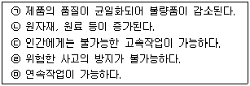
- ㉠, ㉡, ㉣
- ㉠, ㉡, ㉢, ㉤
- ㉠, ㉢, ㉤
- ㉠, ㉡, ㉢, ㉣, ㉤
(정답률: 88%)
49. 산소-아세틸렌 가스 연소 혼합비에 따라 사용되고 있는 용접방법 중 산화불꽃(산소과잉불꽃)을 적용하는 재질은 어느 것인가?
- 황동
- 연강
- 주철
- 스테인리스강
(정답률: 65%)
50. 용접에 관한 설명으로 틀린 것은?
- 저항용접 : 용접부에 대 전류를 직접 흐르게 하여 전기 저항열로 접합부를 국부적으로 가열시킨 후 압력을 가해 접합하는 방법이다.
- 가스압접 : 열원은 주로 산소-아세틸렌 불꽃이 사용되며 접합부를 그 재료의 재결정 온도 이상으로 가열하여 축방향으로 압축력을 가하여 접합하는 방법이다.
- 냉간압접 : 고온에서 강하게 압축함으로써 경계면을 국부적으로 탄성 변형시켜 압접하는 방법이다.
- 초음파용접 : 용접물을 겹처서 용접 팁과 하부 앤빌 사이에 끼워 놓고 압력을 가하면서 초음파 주파수로 횡진동을 주어 그 진동 에너지에 의한 마찰열로 압접하는 방법이다.
(정답률: 75%)
51. 다음 중 중압식 토치(medium pressure torch)에 대한 설명으로 틀린 것은?
- 아세틸렌가스의 압력은 0.07 ~ 1.3[kgf/cm2] 이다.
- 산소의 압력은 아세틸렌의 압력과 같거나 약간 높다.
- 팁의 능력에 따라 용기의 압력조정기 및 토치의 조정밸브로 유량을 조절한다.
- 인젝터 부분에 니들 밸블 유량과 압력을 조정한다.
(정답률: 38%)
52. 불활성 가스 아크 용접 시 주로 사용되는 가스는?
- 아르곤가스
- 수소가스
- 산소와 질소의 혼합가스
- 질소가스
(정답률: 85%)
53. 서브머지드 아크 용접에서 용융형 용제의 특징으로 틀린 것은?
- 비드 외관이 아름답다.
- 용제의 화학적 균일성이 양호하다.
- 미용융 용제는 재사용 할 수 없다.
- 용융시 산화되는 원소를 첨가할 수 없다.
(정답률: 69%)
54. 아크 용접 작업 시에 사용되는 차광유리의 규정 중 차광도 번호 13-14의 경우 몇 [A] 이상에 쓰이는가?
- 100
- 200
- 400
- 300
(정답률: 47%)
55. 정격전류가 500A 인 용접기를 실제로 400A 로 사용하는 경우의 허용사용률은 몇 % 인가? (단, 이 용접기의 정격사용률은 40% 이다.)
- 66.5
- 64.5
- 62.5
- 60.5
(정답률: 75%)
56. 용접 용어 중 “아크 용접의 비드 끝에서 오목하게 파진 곳”을 뜻하는 것은?
- 크레이터
- 언더컷
- 오버랩
- 스패터
(정답률: 81%)
57. 돌기 용접(projection welding)의 특징 중 틀린 것은?
- 용접부의 거리가 짧은 점용접이 가능하다.
- 전극 수명이 길고 작업 능률이 높다.
- 작은 용접점이라도 높은 신뢰도를 얻을 수 있다.
- 한 번에 한 점씩만 용접할 수 있어서 속도가 느리다.
(정답률: 85%)
58. 전기 저항 접속의 방법이 아닌 것은?
- 직·병렬접속
- 병렬접속
- 직렬접속
- 합성접속
(정답률: 87%)
59. 전기저항용접과 가장 관계가 깊은 법칙은?
- 줄(Joule)의 법칙
- 플레밍의 법칙
- 암페어의 법칙
- 뉴턴(Newton)의 법칙
(정답률: 68%)
60. 각종 강재 표면의 탈탄층이나 흠을 얇고 넓게 깍아 결함을 제거하는 방법은?
- 가우징
- 스카핑
- 선삭
- 천공
(정답률: 74%)
그리고 "질화법"은 플라즈마 처리법 중 하나로, 질소 기체를 이용하여 표면을 질화시켜 경화시키는 방법입니다. 따라서 이 문제에서 "질화법"이 정답인 이유는, 다른 보기들은 플라즈마 처리법 중에서 다른 방법들을 나타내고 있기 때문입니다.
"침탄법"은 금속 표면에 다른 금속을 침탄시켜 경화시키는 방법을 말하며, "크로마이징"은 금속 표면에 크롬을 도금하여 경화시키는 방법을 말합니다. "화염경화법"은 열을 이용하여 표면을 경화시키는 방법을 말합니다.